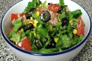

Салат «Весна»3 – 4 свежих огурца, 2 пучка редиса, 1 пучок зеленого лука, 1/2 банки майонеза, сметана, соль, перец по вкусу, несколько веточек зелени.
Редис и огурцы очистите, нарежьте соломкой, добавьте нашинкованный зеленый лук. Затем все перемешайте, посыпьте солью, черным молотым перцем, заправьте майонезом, смешанным со сметаной. Готовый салат выложите в салатницу и украсьте веточками зелени.
Салат «Летний»5 помидоров, 5 свежих огурцов, 1 – 2 кочешка зеленого салата, 2 стручка сладкого перца, 5 столовых ложек растительного масла, 4 столовые ложки лимонного сока, 1 зубчик чеснока, зелень петрушки и укропа, соль и перец.
Помидоры вымойте, нарежьте тонкими ломтиками и выложите по краю салатницы. Свежие огурцы очистите от кожицы, разрежьте вдоль, посолите и оставьте на 10 – 15 минут. Затем нарежьте их небольшими ломтиками и выложите в салатницу рядом с помидорами. В центре поместите нарезанные листья зеленого салата и тонко наструганные стручки сладкого перца. Для приготовления заправки смешайте растительное масло, перец, растертый с солью чеснок и лимонный сок. Затем салат полейте заправкой, посыпьте зеленью петрушки и укропа.
Салат из овощей с яйцом и рисом2 помидора, 2 свежих огурца, 2 столовые ложки риса, 1/3 стакана консервированного зеленого горошка, 3 яйца, 2 – 3 луковицы, листья зеленого салата, 5 столовых ложек майонеза, зелень петрушки и укропа, соль по вкусу.
Рис сварите и остудите. Огурцы, помидоры и вареные яйца нарежьте кружочками, затем их разрежьте пополам. Листья зеленого салата нарежьте соломкой, зеленый лук нашинкуйте. Все перемешайте, добавьте вареный рис, зеленый горошек, мелко нарезанную зелень петрушки и укропа. Салат заправьте майонезом, солью и еще раз перемешайте. Затем выложите в салатницу, украсьте листьями зеленого салата, ломтиками помидоров и огурцов, дольками сваренных вкрутую яиц и нашинкованный зеленью.
Салат «Фантазия»2 клубня картофеля, 1 морковь, сельдерей, петрушка, 1/2 стакана фасоли, 2 соленых огурца, 2 яблока, 2 яйца, маринованный виноград, 1 банка майонеза, соль, сахар, перец и зелень по вкусу.
Отварите фасоль, петрушку, морковь, сельдерей, картофель и яйца, мелко их нарежьте, добавьте очищенные и нарезанные дольками яблоки, огурцы, нарезанные соломкой, все перемешайте. Заправьте половиной майонеза, добавьте маринованный виноград, посыпьте солью, перцем, сахаром по вкусу. Готовый салат выложите в салатницу, заправьте оставшимся майонезом и украсьте дольками яиц, огурца и листьями зеленого салата.
Салат из овощей с рисом1/3 кочана капусты, 1 – 2 моркови, 1/2 пучка зеленого лука, 2 столовые ложки уксуса, 1 столовая ложка сахара, 1/2 стакана риса, 3 столовые ложки майонеза, зелень, соль.
Капусту нашинкуйте, положите в кастрюлю, посолите, добавьте уксус и нагревайте, помешивая, пока она не осядет. Морковь и зеленый лук измельчите, добавьте охлажденную капусту, сахар, отваренный рис, все перемешайте. Салат залейте майонезом, выложите в салатницу и посыпьте мелко нарезанной зеленью петрушки и укропа.
Салат овощной2 клубня картофеля, 1 свекла, 1 морковь, 1/4 вилка капусты, 1/3 стакана зеленого горошка, огурец, помидор, зелень петрушки и укропа, соль и перец по вкусу.
Для заправки: 4 столовые ложки растительного масла, 1/2 чайной ложки сахара, 1/2 чайной ложки горчицы, 2 столовые ложки уксуса, перец, соль.
Свеклу и картофель отварите, охладите, очистите и нарежьте кубиками, так же нарежьте свежие огурцы и морковь, добавьте дольки помидоров и нашинкованную капусту. Затем все перемешайте, добавьте зеленый горошек. Готовый салат выложите в салатницу и полейте заправкой. Салатную заправку можно приготовить следующим образом: сахар разотрите с растительным маслом, добавьте горчицу, молотый перец, соль, уксус и все перемешайте.
Салат из овощей с яблоками2 – 3 яблока, 2 – 3 клубня картофеля, 2 соленых огурца, 3 столовые ложки растительного масла, 1/2 пучка зеленого лука, свекла, 3 столовые ложки уксуса, зелень петрушки, соль по вкусу.
Картофель и свеклу отварите, остудите, очистите и нарежьте небольшими ломтиками. Добавьте очищенные, мелко нарезанные огурцы и нашинкованный лук. Яблоки очистите, нарежьте тонкими ломтиками и смешайте с остальными продуктами. Затем все перемешайте, посолите, заправьте растительным маслом с уксусом и посыпьте мелко нарезанной зеленью петрушки.
Салат «Весенний»2 – 3 моркови, 1 репа, 1 огурец, шпинат, 1 пучок зеленого лука, 1/2 стакана сметаны, зелень петрушки, соль, сахар по вкусу, лимонный сок.
Морковь и репу очистите и натрите на крупной терке, добавьте мелко нарезанные листья шпината, тонкие ломтики огурца, нашинкованный зеленый лук. Затем все перемешайте, посыпьте солью, сахаром по вкусу, полейте лимонным соком и заправьте сметаной. Перед подачей на стол украсьте салат зеленью петрушки.
Салат «Зимний»3 – 4 моркови, 3 – 4 соленых огурца, зелень петрушки, соль, 1 лимон, растительное масло, сыр.
Морковь нарежьте тонкими кружочками, добавьте нашинкованную петрушку и потушите до готовности, затем смешайте с нарезанными кружкам огурцами. Выложите в салатницу, посыпьте натертым сыром, мелко нарезанной зеленью петрушки, сбрызните лимонным соком и залейте растительным маслом.
Салат из овощей с лимоном2 моркови, 2 корня петрушки, 1 соленый огурец, 1 яблоко, 2 яйца, 2 столовые ложки майонеза, сок 1 лимона, 100 г сыра, сахар, соль, перец по вкусу, 1 чайная ложка горчицы, 1 луковица, зелень петрушки и укропа.
Овощи и яйца отварите и нарежьте мелкими кубиками. Добавьте нарезанные соломкой очищенный соленый огурец, репчатый лук, сладкий стручковый перец. Затем все перемешайте, посыпьте натертым сыром, солью, сахаром. Салат заправьте майонезом, горчицей, лимонным соком, выложите в салатницу и посыпьте мелко нарезанной зеленью петрушки.
Салат из овощей с фруктами2 моркови, 1/4 кочана капусты, 1 корень сельдерея, 3 огурца, 1 пучок зеленого лука, 1 яблоко, 1/2 лимона, 2 зубчика чеснока, 3 столовые ложки сметаны, 3 столовые ложки майонеза, сахар и соль, несколько веточек зелени.
Нарежьте мелкой соломкой капусту, морковь и огурцы. Добавьте нашинкованные зеленый лук, чеснок и очищенный корень сельдерея. Яблоки очистите, удалите сердцевину и нарежьте небольшими дольками. Затем все перемешайте, посыпьте солью, сахаром и полейте лимонным соком. Салат заправьте майонезом, смешанным со сметаной, выложите в салатницу и украсьте дольками яблок и зеленью.
Салат «Витаминный»2 моркови, 2 огурца, 1 яблоко, 2 помидора, листья зеленого салата, 1/2 стакана сметаны, сок 1/2 лимона, 1 чайная ложка сахара, соль по вкусу.
Огурцы очистите и нарежьте тонкой соломкой, очищенные морковь и яблоки натрите на крупной терке. Листья зеленого салата разрежьте на 4 части. Затем все перемешайте, посолите, посыпьте сахаром, полейте лимонным соком и заправьте сметаной. Салат украсьте нарезанными тонкими ломтиками помидорами.
Салат «Здоровье»2 свежих огурца, 1/3 кочана капусты, 2 – 3 моркови, 2 яйца, 2 столовые ложки сметаны, 2 чайные ложки сахара, лимонная кислота, соль по вкусу, зелень петрушки.
Капусту нашинкуйте и перетрите с солью, добавьте нарезанные соломкой морковь и огурцы. Все перемешайте, залейте заправкой. Для приготовления заправки сметану разотрите с желтками сваренных вкрутую яиц, лимонной кислотой и сахарным песком. Готовый салат выложите в салатницу и украсьте яичными белками и зеленью петрушки.
Салат из сырых овощей3 – 4 моркови, 1 корень сельдерея, 1 пучок редиса, листья зеленого салата, соль, 1 лимон, растительное масло.
Морковь, сельдерей и редис очистите и натрите на крупной терке. Листья салата нарежьте соломкой. Затем все перемешайте, полейте лимонным соком, посолите и заправьте растительным маслом.
Салат «Мечта»2 помидора, 1 огурец, 4 – 5 стручков сладкого перца, 1 головка репчатого лука, 1 столовая ложка уксуса, 2 столовые ложки растительного масла, зелень петрушки и укропа, соль по вкусу.
Помидоры обдайте кипятком, очистите от кожицы и нарежьте ломтиками, свежие огурцы – кружочками, стручки сладкого перца – соломкой. Репчатый лук нарежьте тонкими кольцами, посолите и залейте холодной водой на 10 минут. Затем все перемешайте, добавьте мелко нарезанную зелень, посолите по вкусу и заправьте растительным маслом.
Салат овощной с зеленью4 – 5 клубней картофеля, 1 – 2 огурца, 1 – 2 редьки, 1/2 банки майонеза, 1/2 пучка зеленого лука, листья зеленого салата, зелень петрушки, сахар, уксус, соль по вкусу.
Редьку очистите и нарежьте тонкими ломтиками, картофель отварите, охладите, очистите и нарежьте кружочками, огурцы – соломкой, посолите, посыпьте сахаром и добавьте уксус по вкусу. Затем все перемешайте и заправьте майонезом. Салат можно украсить листьями зеленого салата и мелко нарезанной зеленью.
Салат из капусты «Вдохновение»1/3 кочана свежей капусты, 3 – 4 клубня картофеля, 2 головки репчатого лука, 1/2 стакана соленых грибов, 2 зубчика чеснока, 5 – 6 столовых ложек растительного масла, мелко нарезанная зелень и соль по вкусу, ягоды клюквы для украшения.
Капусту нашинкуйте и перетрите с солью, вареный картофель и репчатый лук нарежьте кубиками, добавьте мелко нарезанные грибы и измельченный чеснок. Затем все перемешайте, заправьте растительным маслом и украсьте зеленью и клюквой.
Салат «Оливье»3 клубня картофеля, 1 свекла, 1 морковь, 2 яйца, 1 луковица, 2 соленых огурца, 1/3 стакана сметаны, 1/3 стакана майонеза, 4 столовые ложки зеленого консервированного горошка.
Картофель, свеклу, морковь и яйца отварите, остудите, очистите и нарежьте небольшими кубиками. Добавьте так же нарезанные репчатый лук и очищенные огурцы. Салат заправьте майонезом, смешанным со сметаной, и украсьте зеленым горошком.